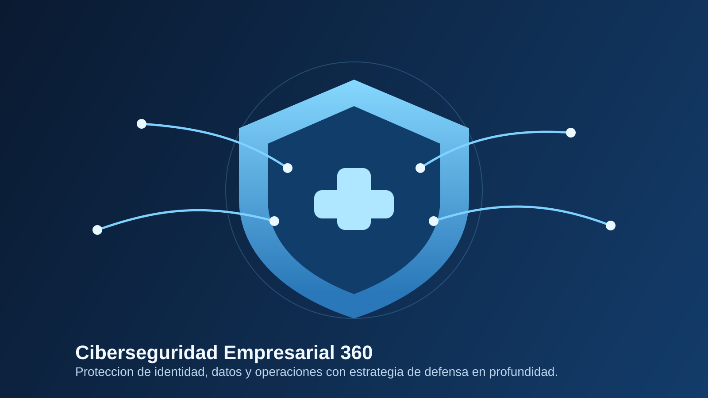
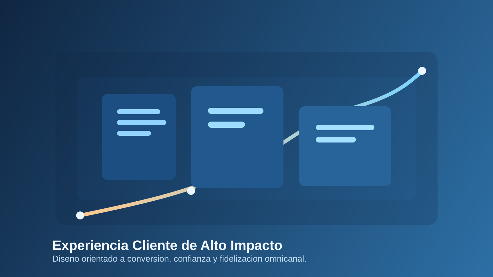

0
Años de experiencia comercial

Mensaje principal
Buscamos soluciones a nivel nacional y global para complementar tu oferta, representar tus productos y asesorar su adaptacion al mercado local.
0
Años de experiencia comercial
0
Clientes y cuentas atendidas
0
Proyectos y gestiones ejecutadas
0
Satisfaccion y continuidad (%)
Cobertura comercial proyectada para Chile, Peru y Colombia con foco en expansion B2B.
+14
años de experiencia comercial
Nacional + Global
busqueda activa de productos y categorias
360°
hunting, representacion, logistica y consultoria
B2B
foco en marcas, distribuidores y canales estrategicos
Equipo en accion




Servicios clave
Buscamos soluciones a nivel nacional y global. Conversemos respecto de tus necesidades y las categorías que quieres desarrollar, y encontraremos las mejores alternativas para complementar tu oferta.
Busco un producto >Operamos como representantes de tu producto o marca, haciéndonos cargo de la presentación en distintos canales, planeación de la demanda, logística y gestión de cara al mercado local.
Quiero un representante >Entendemos el mercado y analizaremos las oportunidades y requerimientos para adaptar tu producto o marca a la realidad local mediante la investigación y entendimiento de tus potenciales clientes.
Quiero asesoría >Tecnologia aplicada
Asistente digital para responder consultas, orientar visitantes y captar oportunidades 24/7 con discurso alineado al negocio.
Indicadores de clientes, proyectos, cumplimiento y cobertura para pasar de una vitrina estática a una señal de ejecución continua.
Medición de comportamiento, origen de leads y páginas de mayor conversión para optimizar la experiencia comercial del sitio.
Mensajes distintos para clientes, proveedores, marcas e inversionistas según el perfil y la intención de visita.
Navegación y formularios optimizados primero para celular, priorizando velocidad, claridad y acción inmediata.
Dashboard Publico
Chile | Peru | Colombia
Evidencia de resultados
Problema: baja eficiencia logistica y baja velocidad de respuesta en reposicion.
Solucion: reestructuracion operativa, coordinacion comercial y seguimiento de abastecimiento.
Problema: ingreso al mercado local sin estructura comercial ni lectura del canal.
Solucion: representacion de marca, validacion de demanda y activacion en cuentas objetivo.
Problema: portafolio con baja traccion y poca claridad sobre oportunidades reales.
Solucion: consultoria comercial, lectura de mercado y priorizacion de categorias con potencial.
"KEINER entendio rapidamente nuestra necesidad comercial y ordeno una ruta concreta para representar la marca en Chile." Gerencia Comercial, Empresa de Consumo
"Su lectura del mercado local y su gestion operativa nos permitieron acelerar la validacion de categoria." Director de Desarrollo, Marca Internacional
Metodo KEINER
Levantamos necesidades, categoria objetivo y brechas de mercado.
Identificamos alternativas nacionales y globales con potencial comercial.
Presentamos marca, gestionamos canal y coordinamos demanda y logistica.
Ajustamos estrategia con feedback del mercado y resultados por canal.
Power BI y Analitica
KEINER puede evolucionar este sitio con tableros publicos y privados para mostrar KPIs logisticos, OTIF, Fill Rate, Lead Time, inventarios y avance comercial por cuenta.
FAQ Ejecutiva
Trabajamos categorías de consumo y especialidades según tu estrategia de crecimiento, evaluando alternativas nacionales y globales.
Gestionamos presentación de marca, planificación de demanda y coordinación operativa para una ejecución consistente en canales objetivo.
Entregamos diagnóstico de oportunidad, recomendaciones de ajuste comercial y una ruta de implementación priorizada.
Normalmente en menos de 24 horas hábiles coordinamos levantamiento y siguiente paso según tu necesidad.
Propuesta de valor
Conectamos necesidades comerciales con soluciones concretas, desde la búsqueda de productos hasta su representación y adaptación al mercado local.
Nuestra operacion
Evaluamos alternativas con foco en continuidad, calidad y potencial de mercado.
Presentacion comercial, activacion y seguimiento de demanda en distintos canales.
Investigamos comportamiento y oportunidades para posicionar mejor cada categoria.
Sobre KEINER.CL
Movemos el producto que tienes y encontramos el producto que quieres. Nuestro equipo combina experiencia comercial, conocimiento de mercado y ejecucion en terreno.
Conectamos categorias con oportunidades reales de crecimiento.
Representamos tu marca con gestion comercial y operativa.
Convertimos analisis de mercado en decisiones concretas.
Alianza estrategica
Combinamos mirada estrategica y ejecucion en terreno para mover productos, posicionar marcas y abrir oportunidades sostenibles en el mercado local.
Siguiente paso
Cuentanos si buscas productos, representacion o asesoria, y te propondremos alternativas concretas para tu oferta con un flujo de captacion orientado a ventas reales.
Explora Hunting de Productos, Representacion y Consultoria.
Revisa resultados y escenarios de aplicacion comercial.
Conoce enfoque, equipo y cobertura de mercado.
Inicia una evaluacion comercial personalizada.